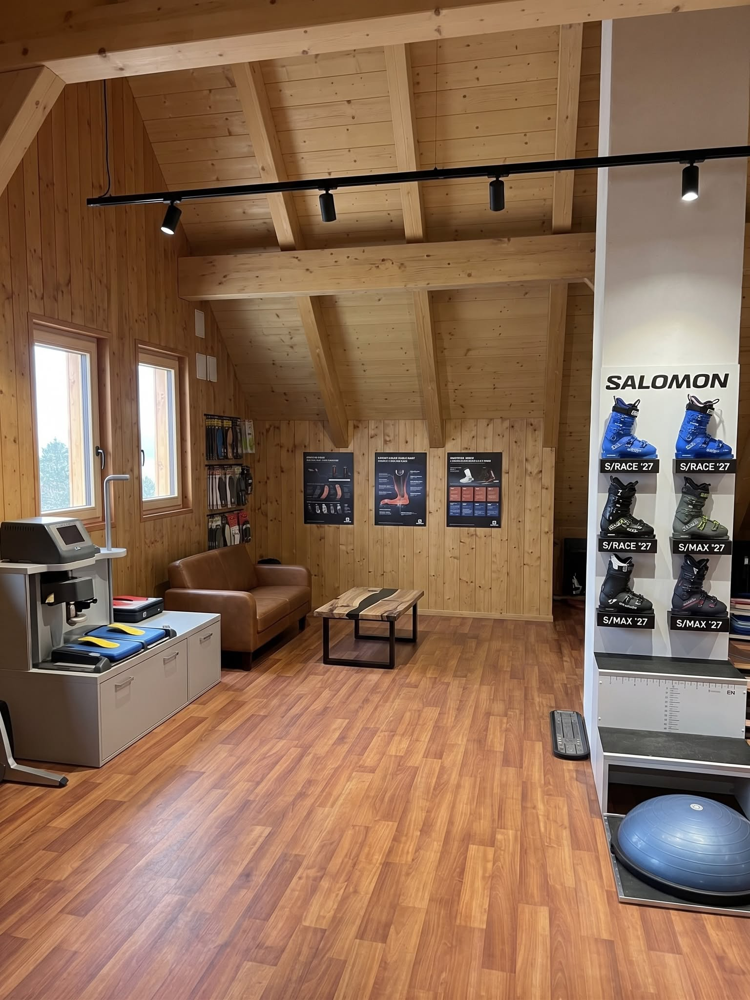

Sportovní a expertní úroveň
(Nekompromisní přenos síly)
- Salomon S/PRO RACE 140: Závodní tuhost pro maximální odezvu.
- Salomon S/PRO RACE 110: Expertní výkon s mírně tolerantnější flexí.

Profesionální bootfitting, vakuově tvarované vložky a prodej lyžařských bot na míru v Jizerských horách. Jízda bez bolesti a s maximální kontrolou
Rezervovat termínŠpičkové lyžování začíná od nohou.
Každé chodidlo je naprostý originál a sériově vyráběná bota z regálu mu nikdy neposkytne ideální oporu. Pokud vás na sjezdovce trápí mravenčení, chlad, bolestivé otlačeniny nebo cítíte, že se vám zvedá pata a ztrácíte přesný přenos síly na hrany lyží, řešením je bootfitting.
Základem správného postavení chodidla je vložka. Pracuji s prémiovou vakuovou technologií Sidas pro rychlé a precizní otisky.
Vytahování plastu (punching), vnitřní frézování skeletu a tepelné tvarování vnitřních botiček pro dokonalé obepnutí nohy bez tlakových bodů.
Nekupujte boty naslepo. Vyberte si skelet s expertem.
Předpokladem dokonalého fittingu je správně zvolený základní skelet. Jako specializovaná dílna nabízím pro sezónu 2026/2027 prodej vybraných top modelů značky Salomon s inovativní technologií Custom Shell HD a revolučním systémem stahování BOA.
V ceně každého zakoupeného páru je zahrnuta základní diagnostika a úvodní tepelné přizpůsobení skeletu a vnitřní botičky přímo na vaši nohu.
Aktuálně naskladněné modely:
(Nekompromisní přenos síly)
(Pro lyžaře s užším chodidlem a nižším nártem)
(Univerzální šířka pro standardní chodidlo)
Cena (vč. DPH)
Cena (vč. DPH)
Cena (vč. DPH)
Cena (vč. DPH)
Platnost od září 2026
Najdete mě v novém podkrovním studiu v srdci Jizerských hor. Pracuji výhradně na předchozí objednání. Díky tomu mám na vaše nohy stoprocentní soustředění a garantuji vám klidný prostor bez čekání. Standardní bootfitting a výroba vložek trvá přibližně více než 60 minut.